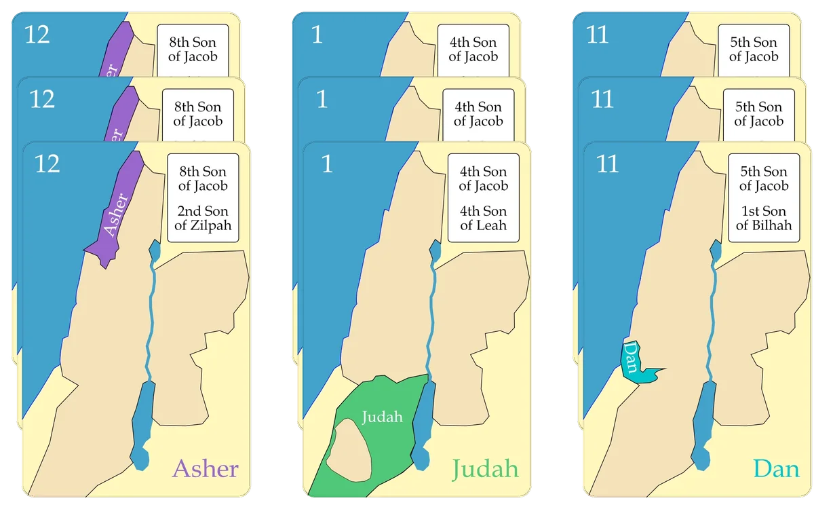

A tribes of Israel matching game
Three-by-Three
A simple matching game based on the tribes of Israel: collect three sets of three matching cards.
- 2–6 players
- Ages 12+
- 10–20 min
- 42 cards
- 13 tribes
$9.99 $12.99 Introductory price
Ships from the SDG Biblical Wisdom shop.

Match the tribes
Three-by-Three is a simple matching game where players seek to collect three sets of three matching cards each.
The game is based on the Tribes of Israel. In Numbers 2 we read God's instructions to Moses and Aaron concerning how the tribes were to camp as they passed through the wilderness during the Exodus:
- On the east side of the Tabernacle would be the standard of Judah, with the tribes of Judah, Issachar, and Zebulun.
- On the south side of the Tabernacle would be the standard of Reuben, with the tribes of Reuben, Simeon, and Gad.
- On the west side of the Tabernacle would be the standard of Ephraim, with the tribes of Ephraim, Manasseh, and Benjamin.
- On the north side of the Tabernacle would be the standard of Dan, with the tribes of Dan, Asher, and Naphtali.
- The tribe of Levi served in the Tabernacle and camped immediately around the Tabernacle.
Then in Numbers 10, we read that when God would lead Israel to set out from camp, they were to go out in groups of three tribes in this order:
- Judah (v.14), Issachar (v. 15), and Zebulun (v. 16)
- Part of Levi with the Tabernacle (v. 17)
- Reuben (v. 18), Simeon (v. 19), and Gad (v. 20)
- The rest of Levi with the holy things (v.21)
- Ephraim (v. 22), Manasseh (v. 23), and Benjamin (v. 24)
- Dan (v. 25), Asher (v. 26), and Naphtali (v. 27)
Thus was the order of march of the children of Israel, according to their armies, when they began their journey. (Numbers 10:28 NKJV)
The Three-by-Three game follows this same pattern. The game includes 39 cards, three each for the thirteen tribes numbered in the order of their departure (with the two parts of Levi combined as number 7). Players are trying to find and collect matching sets of all three cards from each of the tribes.
The game can be played by kids old enough to recognize numbers 1 - 13, is played by 2 - 6 players, and each game takes 10 - 20 minutes to play.
The winner is the first to either collect three sets of three matching Tribe cards, or to collect a set of three Levi cards.
The cards
The Three-by-Three deck is comprised of 42 cards:
- 3 of each of the 13 Tribes (39 total)
- 3 information cards about the tribes of Israel (3 total)
Only the Tribe Cards are used in playing the game.
Tribe cards
Each of the Tribe Cards has the name of the tribe in the bottom right of the card, a number in the top left of the card indicating the order they set out from the camp, and a map showing the territory allotted to the tribe in the Promised Land. (Since Levi was not alloted a territory, the Levi card instead displays the breastplate of judgement worn by Aaron, with the twelve precious stones representing the twelve tribes of Israel - see Exodus 28:15-21.)
The card backs depict the 12 tribes camped in the wilderness around the Tabernacle.
Informational cards
The Three-by-Three deck includes three cards that provide additional information about the tribes of Israel:
- The backs of the three cards show the allotment of territories in the promised land to all twelve tribes.
- One card lists the twelve sons of Jacob in birth order with their mother's name in parenthesis. It also lists the 2 sons of Joseph, each of which became a tribe of Israel.
- One card lists the tribes and their census numbers, according to Numbers 1.
- One card lists the tribes and their census numbers, according to Numbers 26.
Here are the informational cards:
Browse all the cards
A closer look at the cards
How to play
Reveal two cards from hands or the matrix. If they match, go for a third. Collect three sets of three, or all three Levi cards, to win.
There are 42 cards in the Three-by-Three game: 39 Tribe Cards and 3 Informational Cards. (See Below.)
Game setup
- Shuffle the Tribe Cards.
- Each player is dealt three Tribe Cards.
- Deal the next nine Tribe Cards face down into the center of the playing area in a 3x3 matrix.
- Set the remaining Tribe Cards face down as a draw pile.
Play begins with the player to the left of the dealer.
On a player's turn
The player takes one of three actions:
- Show either his highest or lowest card.
- Ask another player to show his highest or lowest card.
- Flip to reveal a card from the center matrix.
The player then again takes one of those same three actions. This can be the same action or a different one. It can be from the same source (player or matrix) or a different one.
Note that any player's middle card is generally not in play, however, if you ask twice to see a player's highest card in the same turn, you will see their highest and their next highest (middle) card.
If the two revealed cards match, then repeat the process a third time, hoping to find a matching set of three Tribe Cards.
If a set of three is found, the player places them face up in front of him. Replace the taken cards with cards from the draw pile (if any are available) so that everyone has 3 cards in their hand and the matrix is full.
If a match of three was not found, all cards return to their original locations.
If a player found his third set of matching Tribe Cards, or found all three Levi cards, then the game ends. Otherwise, play passes to the next player to the left.
If all players agree that no sets of three are in play, add three new cards from the draw pile (if available) to the matrix and continue play. The first time you do this, there will now be 12 cards in the matrix. If you do it a second time, there will now be 15 cards in the matrix.
Winning the game
- A player wins when he has collected three sets of three matching Tribe Cards, or if he has collected a set of three matching Levi Tribe Cards.
- (Since Levi is the middle tribe, and since the middle card in a player's hand is generally not in play, collecting all three Levi cards is harder than getting three of any other tribe.)
Example game
Below we walk through a game between four players, turn by turn. To keep the graphics as simple and small as possible, and the game play easy to follow, we don't include any of the artwork on the cards. Instead, we have labelled the cards and, when a card is revealed, we simply show the numerical value of the card.
Light blue cards are unplayed cards. White cards are those currently in play. Pink cards are matched Tribe sets that have been won.
Initial deal
At the beginning of the game, each player is dealt three cards. Players look at their cards and order them in their hand from low to high.
Nine cards are dealt face down in the middle of the table in a matrix.
Turn 1: Player 1
Player 1 asks Player 3 to show his highest card (an 8) and asks Player 4 to show his highest card (an 11).
Since they don't match, Player 1's turn is over.
Turn 2: Player 2
Player 2 asks Player 3 to show his lowest card (a 2) and asks Player 4 to show his lowest card (a 1).
Since they don't match, Player 2's turn is over.
Turn 3: Player 3
Player 3 asks Player 1 to show his highest card (a 7) and asks Player 2 to show his highest card (an 11).
Since they don't match, Player 3's turn is over.
Turn 4: Player 4
Player 4 asks Player 2 to show his highest card (an 11) and flips over the Top Left card in the Matrix (a 4).
Since they don't match, Player 4's turn is over.
Turn 5: Player 1
Player 1 asks Player 2 to show his highest card (an 11) and asks Player 4 to show his highest card (also an 11).
Since they match, he gets to try to find the third match. He flips over the Top Right card in the Matrix (a 13).
Since they don't match, Player 1's turn is over.
Turn 6: Player 2
Player 2 asks Player 1 to show his lowest card (a 1), asks Player 4 to show his lowest card (also a 1).
Since they match, he gets to try to find the third match. He flips over the Top Center card in the Matrix (a 13).
Since they don't match, Player 2's turn is over.
Turn 7: Player 3
Player 3 turns over the Bottom Left card in the Matrix (a 3) and turns over the Bottom Right card in the Matrix (a 10).
Since they don't match, Player 3's turn is over.
Turn 8: Player 4
Player 4 asks Player 2 to show his lowest card (a 7), asks Player 1 to show his highest card (also a 7).
Since they match, he gets to try to find the third match. He turns over the Bottom Center card in the Matrix (a 1).
Since they don't match, Player 4's turn is over.
Turn 9: Player 1
Player 1 asks Player 4 to show his lowest card (a 1), turns over the Bottom Center card in the Matrix (also a 1).
Since they match, he gets to try to find the third match. He reveals his lowest card (also a 1).
Since all three match, Player 1 places the matched set in front of him.
Player 4 and Player 1 each take a card from the draw pile and another card from the draw pile is used to fill the hole in the Matrix.
Player 1's turn is over.
Turn 10: Player 2
Player 2 asks Player 1 to show his lowest card (a 2) and asks Player 4 to show his lowest card (an 8).
Since they don't match, Player 2's turn is over.
Turn 11: Player 3
Player 3 turns over the Bottom Center card in the Matrix (an 8), asks Player 4 to show his lowest card (also an 8).
Since they match, he gets to try to find the third match. He asks Player 3 to show his highest card (also an 8).
Since all three match, Player 3 places the matched set in front of him.
Player 3 and Player 4 each take a card from the draw pile and another card from the draw pile is used to fill the hole in the Matrix.
Player 3's turn is over.
Turn 12: Player 4
Player 4 asks Player 3 to show his highest card (an 11) and turns over the Bottom Center card in the Matrix (a 9).
Since they don't match, Player 3's turn is over.
Turn 13: Player 1
Player 1 asks Player 3 to show his highest card (an 11). He remembers that Player 4's highest card was also an 11, so asks to see it, but Player 4 has since drawn a 12 and so he shows that instead.
Since the cards don't match, Player 1's turn is over.
Turn 14: Player 2
Player 2 turns over the Middle Center card in the Matrix (a 3), the Bottom Left card in the Matrix (also a 3).
Since they match, he gets to try to find the third match. He turns over the Middle Left card in the Matrix (a 2).
Since they don't match, Player 2's turn is over.
Turn 15: Player 3
Player 3 asks Player 1 to show his lowest card (a 2), turns over the Middle Left card in the Matrix (also a 2).
Since they match, he gets to try to find the third match. He shows his own lowest card (also a 2).
Since all three match, Player 3 places the matched set in front of him.
Player 1 and Player 3 each take a card from the draw pile and another card is taken from the draw pile to fill the hole in the Matrix.
Player 3's turn is over.
Turn 16: Player 4
Player 4 asks Player 3 to show his lowest card (a 3), turns over the Bottom Left card in the Matrix (also a 3).
Since they match, he gets to try to find the third match. He turns over the Middle Center card in the Matrix (also a 3).
Since all three match, Player 4 places the matched set in front of him.
Player 3 takes a card from the draw pile and two more cards are taken from the draw pile to fill the holes in the Matrix.
Player 4's turn is over.
Turn 17: Player 1
Player 1 asks Player 3 to show his lowest card (a 6) and turns over the Bottom Left card in the Matrix (a 4).
Since they don't match, Player 1's turn is over.
Turn 18: Player 2
Player 2 asks to see Player 1's lowest card (a 4), turns over the Bottom Left card in the Matrix (also a 4).
Since they match, he gets to try to find the third match. He turns over the Top Left card in the Matrix (also a 4).
Since all three match, Player 2 places the matched set in front of him.
Player 1 takes a card from the draw pile and two other cards are taken from the draw pile to fill the holes in the Matrix.
Player 2's turn is over.
Turn 19: Player 3
Player 3 asks Player 1 to show his lowest card (a 7), asks Player 2 to show his lowest card (also a 7).
Since they match, he gets to try to find the third match. He turns over the Top Left card in the Matrix (also a 7).
Since all three match, Player 3 collects the matched set.
Player 3 wins the game both because that is his 3rd matched set, but also because he collected the set of all three 7 cards.
Game over!
Game over!
Get Three-by-Three
$9.99 $12.99 · Introductory price. Orders from the SDG Biblical Wisdom shop typically ship within a couple of days.